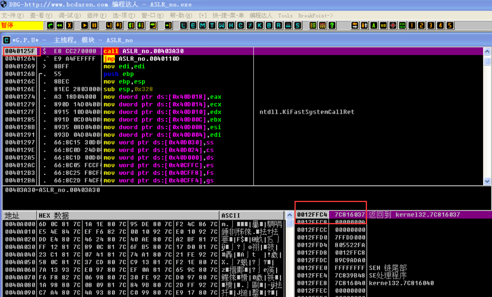
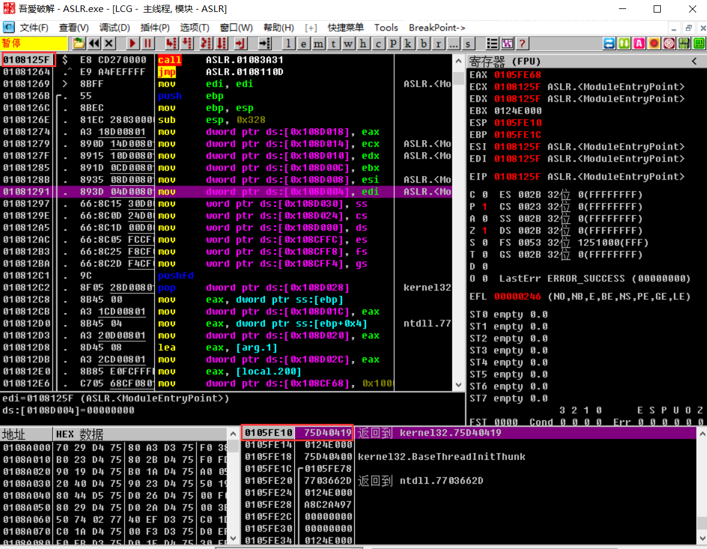
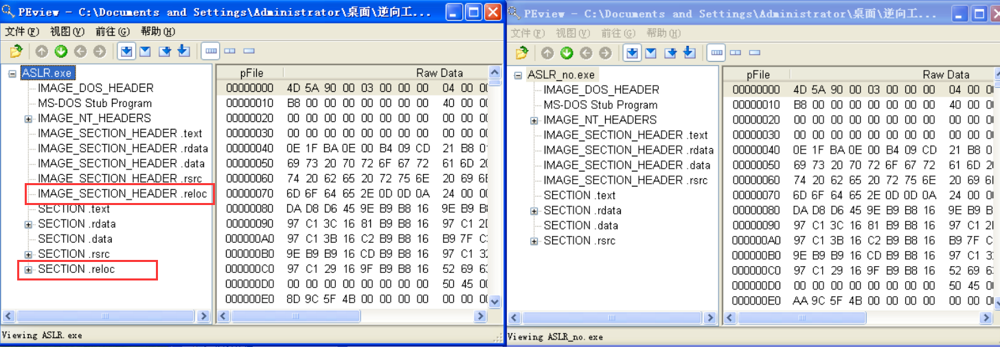
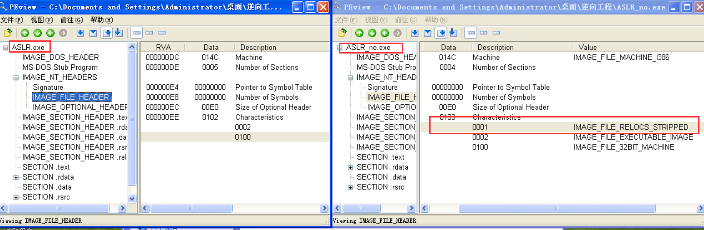
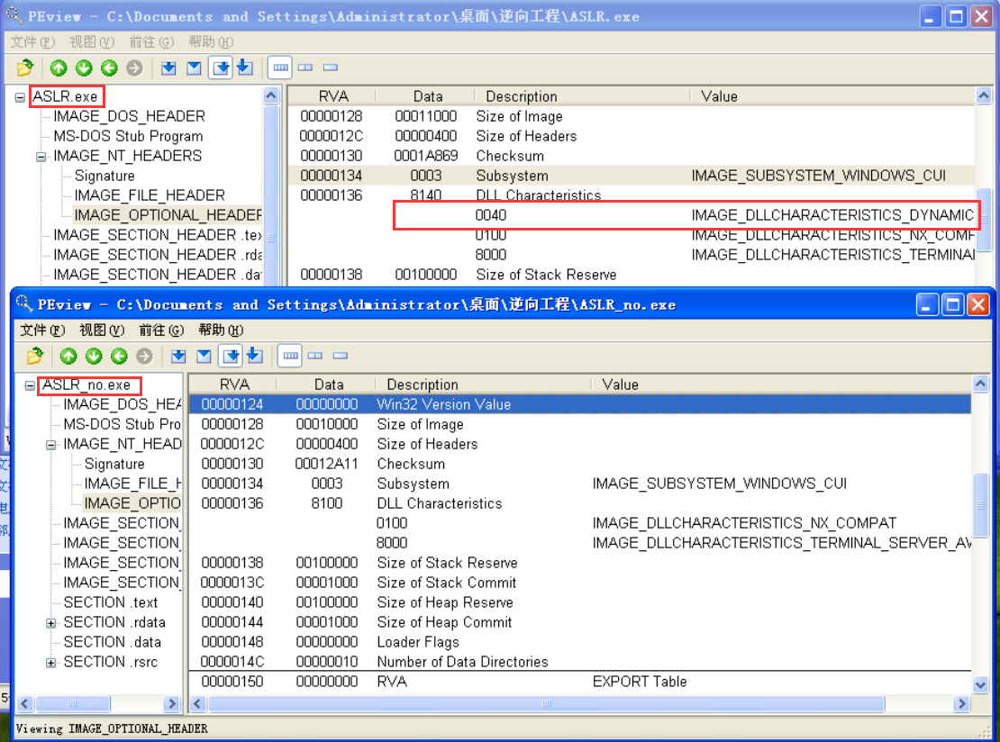
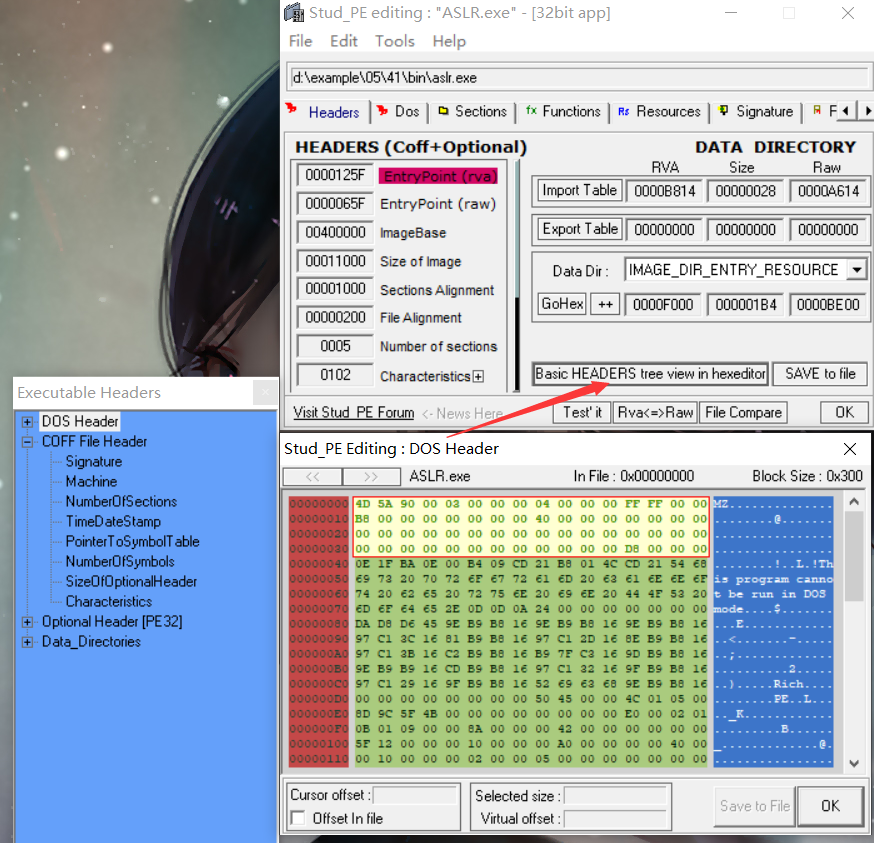
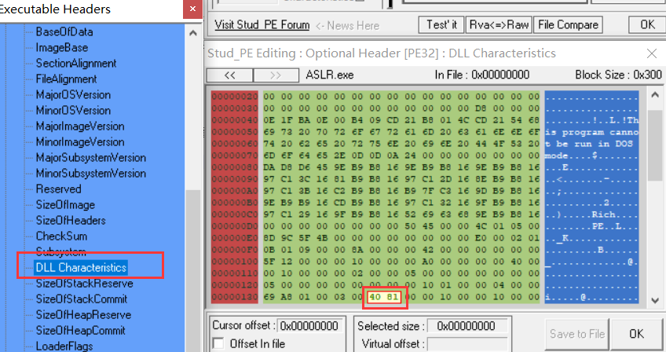
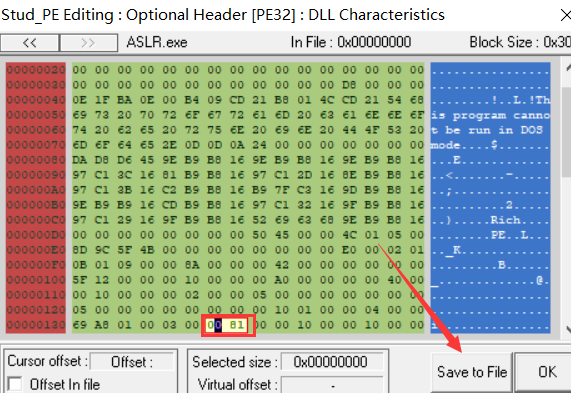
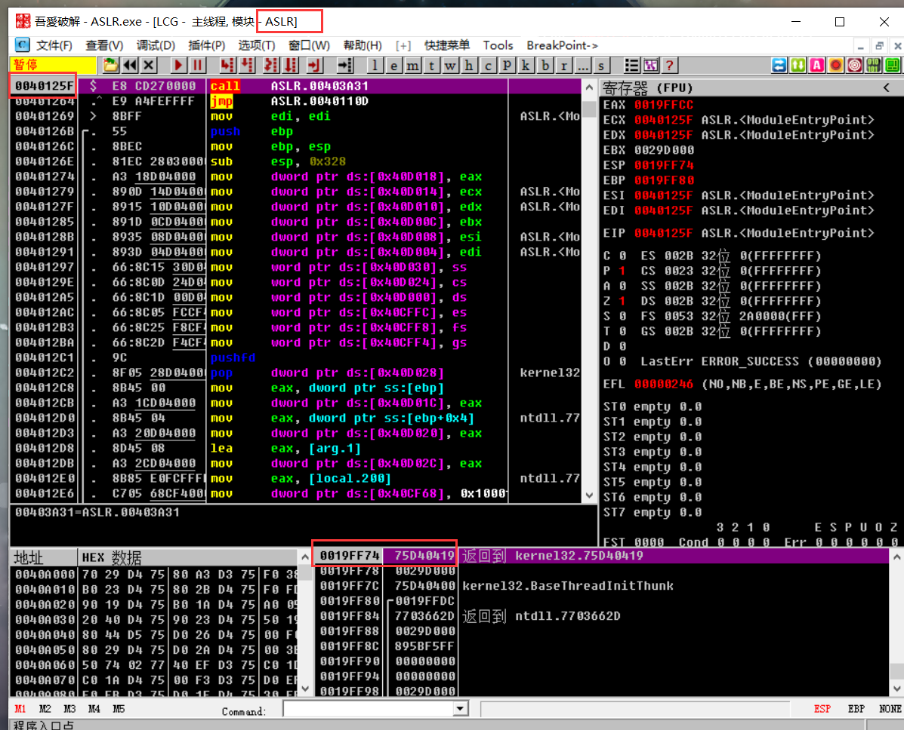

概念
ASLR是一种针对缓冲区溢出的安全保护技术，通过对堆、栈、共享库映射等线性区布局的随机化，通过增加攻击者预测目的地址的难度，防止攻击者直接定位攻击代码位置，达到阻止溢出攻击的目的的一种技术。
ASLR（Address space layout randomization）是一种针对缓冲区溢出的安全保护技术，通过对堆、栈、共享库映射等线性区布局的随机化，通过增加攻击者预测目的地址的难度，防止攻击者直接定位攻击代码位置，达到阻止溢出攻击的目的。据研究表明ASLR可以有效的降低缓冲区溢出攻击的成功率，如今Linux、FreeBSD、Windows等主流操作系统都已采用了该技术。
调试
用OD载入ASLR和ASLR_no两个程序


看起来基址不一样的 这就是ALSR文件的区别 每次载入都会改变基址 我们用PEView载入程序看看

节区信息
对于普通的EXE文件不存在.reloc文件 只有用了ASLR技术的应用才会有 被加载在内存时 被用作重定位的参考 它不是必须部分 可以删除
再来看看这两部分 ASLR的characteristics属性字段并不存在这一段 因为ASLR.exe文件中多出来1个.reloc节区 所以Number of Sections值增1

ASLR文件的DLL Characteristics中设有这一段 这也就是ASLR文件的标志了

删除ALSR功能
我们使用Stud_PE工具修改ASLR.exe文件 载入可以看到应用的相关信息 并点击这里可以看到

我们找到DLL Characteristics的地方 并看到他在内存中的值 我们将属性值由8140改成8100 然后保存文件


再次载入ASLR文件 可以看到基址和ASLR_no文件一样了 这样就将文件删除ALSR功能了
